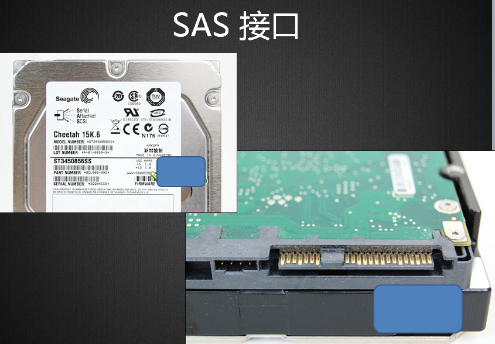
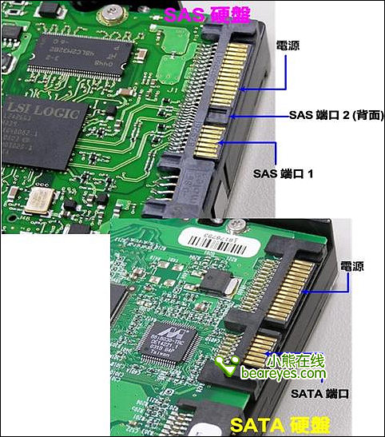

SAS-SATA-SSD-SCSI-IDE硬盘讲解
常见接口磁盘类型：
- SAS硬盘 6gps
- SATA硬盘 6gps
- SCSI硬盘 640MBps
- IDE硬盘 133MBps
你的服务器使用什么磁盘？
SAS硬盘：
- SAS（串行连接SCSI接口）
- SAS（Serial Attached SCSI），串行连接SCSI接口，串行连接小型计算机系统接口。
- SAS是新一代的SCSI技术，和现在流行的Serial ATA(SATA)硬盘相同，都是采用串行技术以获得更高的传输速度，并通过缩短连结线改善内部空间等。
- SAS的接口技术可以向下兼容SATA。


SAS和SATA接口对比

SAS 磁盘线

磁盘尺寸：
- 3.5英寸设计
- 2.5英寸设计
- 此前主流的桌面磁盘和服务器磁盘都是采用3.5英寸设计，而SAS硬盘除了具有传统的3.5英寸规格之外，还采用了2.5英寸的缩小版，这样可以在机架式服务器有限的空间内安装更多的磁盘以扩充存储系统的容量，也能够为其他配件腾出更大的空间，以便通风散热，在2U高度内使用8个2.5英寸的SAS硬盘位已经成为大多数服务器厂商的选择。
已经被淘汰的硬盘：


数据线和电源接口，串型和并型 哪个快?

并口为什么没有串口快？ 知道：1 不知道：2
- 串口形容一下就是 一条车道，而并口就是有8个车道。同一时刻能传送8位（一个字节）数据。
- 但是并不是并口快，由于8位通道之间的互相干扰。传输受速度就受到了限制。当传输出错时，要同时重新传8个位的数据，而且传输速度越快，干扰越严重。这是硬伤，这样速度就无法提升上来。
- 串口没有干扰，传输出错后重发一位就可以了。而且串口传输的时钟频率要比并口高。
1956年，一台5mb的IBM硬盘被装上飞机，重量超过一吨


12.1.2 当下流行的磁盘种类
常见硬盘品牌：希捷 西数 日立 HP DELL EMC IBM
硬盘分几种？
- 从工作原理来说：
固态：价格相对贵，寿命长，读取速度
机械：怕摔、怕磁，（单位换下来的坏盘会做消磁处理），读取速度---》磁道寻址时间，潜伏时间
- 从硬盘的接口来说
STAT：用在低端服务器多
SAS、SCSI：用在中高服务器
PCIE M.2
对LINUX来说，在内核中，不同的接口对应有不同的命名方式：
操作系统 | IDE | STAT|SCSI | SAS |
RHEL5 | /dev/hda | /dev/sda | /dev/sda |
RHEL6 | /dev/sda | /dev/sda | /dev/sda |
KVM | /dev/vda |
例1：常见磁盘：
戴尔（Dell）服务器硬盘 SAS 300G 15K 3.5英寸缓存：128MB 6Gbp/S
￥1330.00

SAS 磁盘容量一般： 300G 600G
有SAS 2T ， 4T 的硬盘 ？ 有：1 没有：2
希捷(SEAGATE)ES.3系列 2TB 7200转128M SAS 企业级硬盘6G bp/s(ST2000NM0023)
http://item.jd.com/1093052.html 京 东 价： ￥999.00

假SAS= SATA盘身+ SAS接口（热插拔）
硬盘： 容量大 + 便宜 符合市场需求！
提速度：假SAS做raid5 raid10 ，做分布式存储 MFS ，HDFS，GFS, swift ,ceph
例2：存储设备：阵列柜


互动：存储会放到机柜的上面还是下面？

下面：稳 ， 换硬盘方便，机柜不容已倒，布线容易 ，太沉
例3：以西部数据为例，了解一下SATA盘。
你看过什么颜色的盘？ 
蓝、黑、绿 红 ， 黄盘？ 看过：1 没有：2

西部数据(WD)黑盘 2TB SATA6Gb/s 64MB 台式机硬盘￥999.00
西部数据(WD)红盘 2TB SATA6Gb/s 64M 台式机硬盘 ￥849.00
西部数据(WD)紫盘 2TB SATA6Gb/s 64M 监控硬盘 ￥589.00
西部数据(WD)绿盘 2TB SATA6Gb/s 64M 台式机硬盘 ￥499.00
西部数据(WD)蓝盘 2TB SATA6Gb/s 64M 台式机硬盘 ￥459.90
西部数据(WD) 金盘 2TB 7200转128M 企业级硬盘(WD2005FBYZ）￥1099

西部数据(WD)蓝盘 2TB SATA6Gb/s 64M 台式机硬盘(WD20EZRZ)

村中技巧：要4块黑块， 把蓝盘上的标签一撕，然后花两元买4个黑盘的标签一贴。
4块硬盘挣500*4=2000元
如何无痕撕标签？吹风机
如何防？
硬件大师 鲁大师 可以检测 ，或上官网查看序列号
大容量磁盘价格:
西部数据(WD)绿盘 6TB SATA6Gb/s 64MB台式机硬盘￥1899.00
昱科/HGST Ultrastar He10 10T企业级服务器磁盘阵列硬盘10TB现货

注：昱科->前日立硬盘业务
查看存储上的磁盘：

注：ST 希捷 WD 西数
例2：游戏服务器上的固态磁盘： 数据不多， 但要延迟小，随机读写能力强！

接口：

三星/SAMSUNG 750 EVO SSD固态硬盘120G/250G/500G 支架+螺丝刀+SATA线+螺丝 500G
京 东 价 ￥899.00
互动：有SAS接口的SSD硬盘？
联想（Lenovo）IBM存储 V3500/V3700系列 2.5英寸存储硬盘 200G SAS SSD
http://item.jd.com/10184874758.html ￥9999.00
戴尔（DELL）400GB SAS 接口 2.5英寸 SSD固态硬盘 服务器硬盘￥6900.00
例5：开眼界！最贵的SSD磁盘?
英特尔（Intel） DC P3608 1/2 PCIe NVMe3.0x8 MLC固态硬盘 P3608 PCI-E 4TB ￥38999.00

经验： 对于机械式磁盘，SATA3和SATA2接口标准，速度上没有太明显提升，但是对于固态磁盘，SATA3接口比SATA2快很多，就像USB3.0比USB2.0快很多一样。